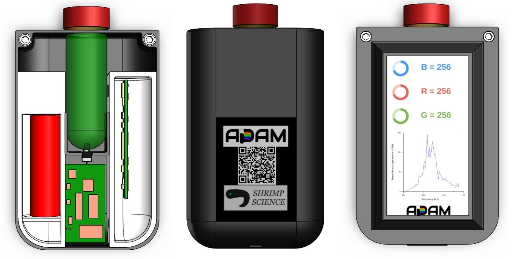

A.D.A.M
(Oct 2019 - Dec 2020)

Our mission
ADAM promotes aquatic health through educational engagement. By involving high school students in marine citizen science, we are broadening the network of available algae bloom data while educating and spreading awareness of the issue.
Why is this important?
Algal blooms, or sudden growths of algae due to chemical pollutants in water and the worldwide rise of water temperature, are responsible for pet and wildlife deaths, human illness, and an impact of millions of dollars on the local economy.
About
ADAM is a data collection device that can measure relevant algal activity metrics by measuring the RGB values of the water sample and analyzing the values based on the researches done about algal blooms. Beside the data collection device, a website platform is also developed for collecting and organizing the algal bloom data, which will be open source for researches. ADAM will employ the ideology of educational engagement and citizen science to connect high school students with local researchers. As a result, ADAM is expected to generate more data across shore lines, raise awareness towards the water quality issues, and improve educational outcomes in the classroom.